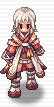

⚔️ Equipamentos Recomendados
Lista de equipamentos focados no ciclo Solar/Lunar, priorizando dano, ASPD e sustain.
Topo

Chapéu Solar
+15% Dano físico vs Neutro/Fogo
+5% ASPD (União Solar)
Baixo

Espada Exemplo
+X Dano físico.
Mão Direita
—
Capa

Anel Exemplo
Bônus elemental.
Acessório Direito
—
